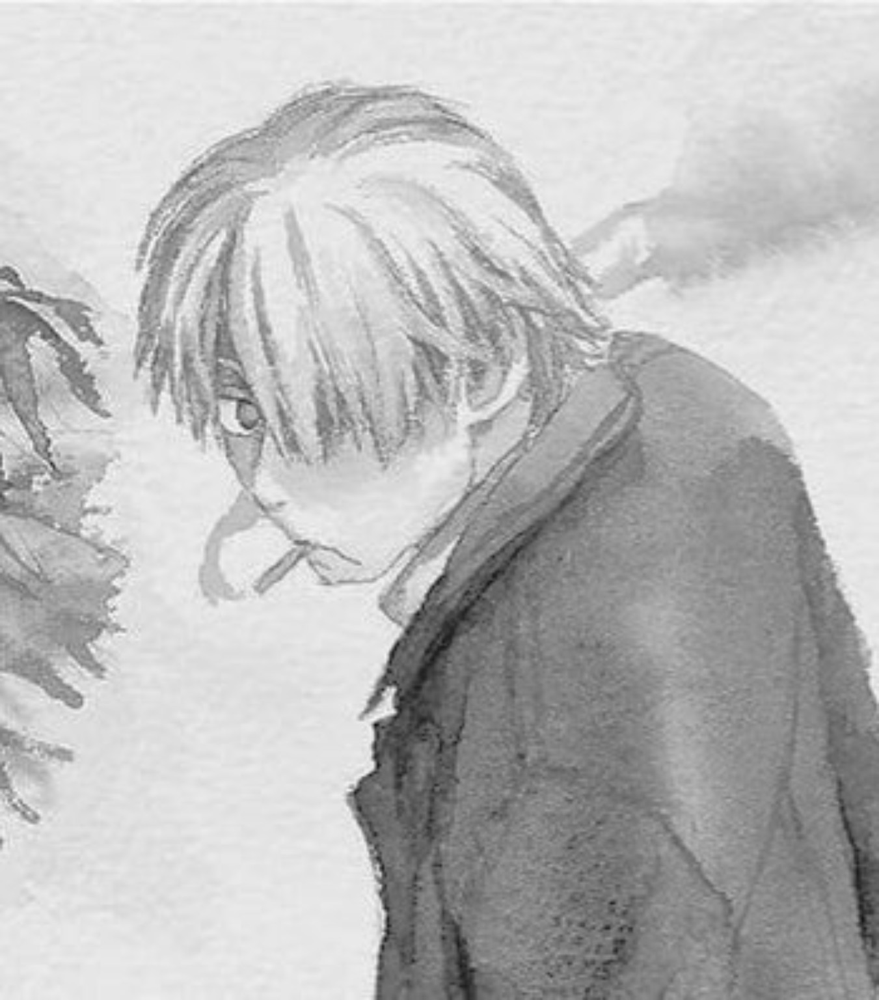
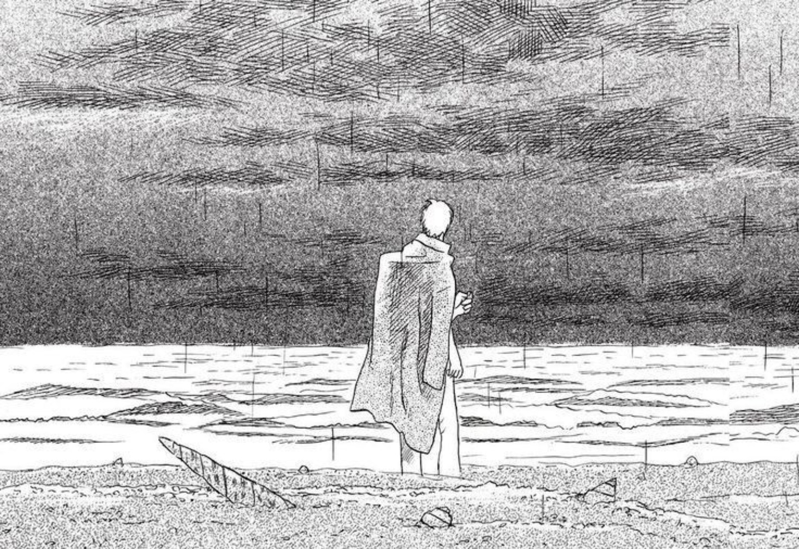

I'm drawn to things that leave something unresolved. I spend a lot of time with films, music, literature, games and ideas, often finding myself more interested in the questions they leave behind than in the answers they offer.
I'm particularly fond of psychological thrillers, seinen, josei and shoujo. I play games like Limbus Company, Reverse: 1999 and NieR, and I'm always looking for something new to experience. Recommendations, conversations and the occasional passionate ramble are welcome. My email is open: 0x00end@gmail.com.

LIKES
Music · Piano · IEMs · Nature · Travel · Tattoos
DISLIKES
Tomatoes · Humidity
INTERESTS
Experiences · Travel · Chicken · Winter and warm showers · Boots · Perfumes · Nature · Anime & manga · Gunpla · Technology · Film · Japanese music · Philosophy · Murakami · Japanese literature · Deep research · K-drama
ARTISTS & MUSIC
Hachu (virtual singer) · Yorushika · Aimer · Hikaru Utada · YOASOBI · Ado · RADWIMPS · BIBI · Tamino
WRITERS & THINKERS
Haruki Murakami · Nietzsche · Deleuze · Foucault
FILMMAKER
Park Chan-wook
GAMES
NieR: Automata · Yakuza series · Metal Gear series · Resident Evil series · Limbus Company · Reverse: 1999
FILMS & SHOWS
Psycho · Tokyo Godfathers · Perfect Blue · Dune · You · Alchemy of Souls · Alice in Borderland · Dark · Mindhunter · Hannibal
ANIME & MANGA
The Tatami Galaxy · Neon Genesis Evangelion · Detective Conan · Serial Experiments Lain · Ghost in the Shell · Rurouni Kenshin · Dorohedoro · Hunter × Hunter · Fullmetal Alchemist: Brotherhood · Mushishi · Code Geass
OTHER
Seinen · Japanese literature · Deep research · K-drama · Gunpla